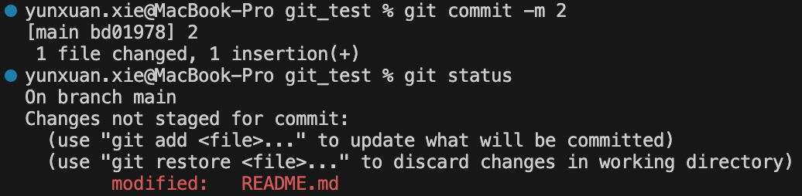
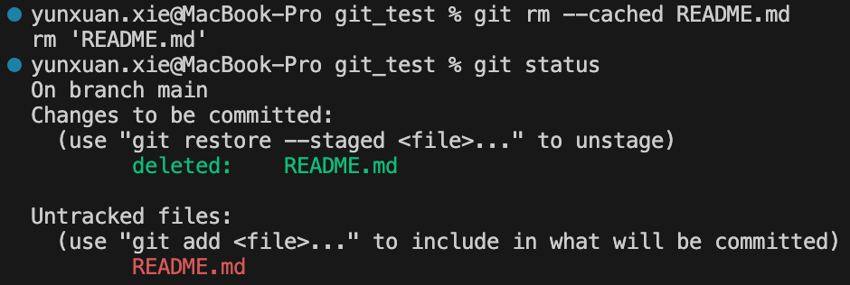

[WIP] 4 树对象和提交对象¶
约 2627 个字 40 行代码 预计阅读时间 9 分钟
Abstract
上一章我们讨论了 git 如何处理单个的文件。这章中，我们会了解到 git 如何处理一个目录，以及如何将目录的状态保存到 git repo 中。
这章中，我们会实现：
ls-files,check-ignore,status
4.1 预备知识¶
4.1.1 暂存区 (stage / index)¶
大家已经熟悉：在本地仓库中，我们会对文件进行一些修改。每当我们完成了一个阶段目标，我们会通过 git add files 的方式将我们的修改添加到暂存区 (stage, a.k.a. index) 中，然后通过 git commit 的方式将暂存区中的内容提交到 git repo 中。也就是说，在 git 的设计中，总共有 3 个类似的东西：本地工作目录、暂存区和 git repo，它们以如下方式交互：

git 的基本用法 | src
文件的状态变化
在 git 和用户的视角里，每一个文件的状态变化如下图所示：

下面对这张图做详细的解释。
我们使用下面这样的形式来刻画 git 仓库 (repo)、暂存区 (index / stage) 和本地工作目录 (work-tree) 某个时刻的状态快照：
repo index work-tree
---------- --------- ---------
main.py(1) main.py(1) main.py(1)
可以看到，main.py 在三个位置都存在，说明这个文件曾经被 commit 过。我们用 (1) 来描述文件的版本；这三个地方 main.py 的版本一致，这说明这个文件在提交之后未被修改过。
我们可能会添加一些文件；对于我们没有 git add 过的文件，它们的状态是「未跟踪 (untracked)」的：git 并不知道这些文件是否被更改过，因为它从来没有存储过这些文件的状态信息；即从来没有用 git hash-object -w 把它们写入到对象存储过：
repo index work-tree
---------- --------- ---------
README.md(1)
main.py(1) main.py(1) main.py(1)
当我们使用 git add 将文件添加到暂存区时，git 会为这个文件的内容生成一个 blob，然后将它写入到 stage 的 tree 中。因此它的状态变为「已暂存 (staged)」；这意味着 git 已经记住了这次修改，并把它加入到了暂存区——git 有能力对这个文件的后续修改进行跟踪：
repo index work-tree
---------- --------- ---------
README.md(1) README.md(1)
main.py(1) main.py(1) main.py(1)
当我们在本地对已跟踪的文件进行修改后，它们的状态变为「已修改 (modified)」，因为 git 发现了本地该文件的 SHA 和暂存区中该文件的 SHA 并不相同。
repo index work-tree
---------- --------- ---------
README.md(1) README.md(2)
main.py(1) main.py(1) main.py(1)
但事实上，此时 README.md 是「已修改」的的同时，它也是「已暂存」的；准确地来说，README.md(1) 是「已暂存」的，而 README.md(2) 是「已修改」的：

git status
git status 会告诉我们 3 种「变动」：
Changes to be committed：暂存区与 repo 的差异Changes not staged for commit：已跟踪的文件中，工作目录与暂存区的差异Untracked files：工作目录中未跟踪的文件
在本节的例子中，我们会看到全部这三个种类。
当我们使用 git add 将已修改的文件添加到暂存区后，它们的状态再次变为「已暂存 (staged)」。
repo index work-tree
---------- --------- ---------
README.md(2) README.md(2)
main.py(1) main.py(1) main.py(1)
当我们使用 git commit 将暂存区的内容提交到 git repo 时，实际上我们是使用 index tree 的内容构建了一个 commit object，将它写入到仓库中（我们稍后会详细讨论这些细节）。因此，它们的状态变为「已提交 (committed)」，因为 git 将暂存区的内容写入到了 git repo 中。此时，git repo 中的内容和暂存区的内容相同，而 work-tree 的状态与它们也一样，因此它也是「未修改 (unmodified)」的。已提交和未修改是等价的状态。
repo index work-tree
---------- --------- ---------
README.md(2) README.md(2) README.md(2)
main.py(1) main.py(1) main.py(1)
Tip
当然，如果我们在 git commit 时处在以下状态：
repo index work-tree
---------- --------- ---------
README.md(1) README.md(2)
main.py(1) main.py(1) main.py(1)
在我们提交后，repo 变得和 index 一样，但 work-tree 的 README.md 与前二者的版本并不同，因此 README.md 的状态仍然是「已修改」：
repo index work-tree
---------- --------- ---------
README.md(1) README.md(1) README.md(2)
main.py(1) main.py(1) main.py(1)

我们还可以通过 git rm 将文件从暂存区删除；
repo index work-tree
---------- --------- ---------
README.md(2) README.md(2)
main.py(1) main.py(1) main.py(1)
此时，README.md 的状态变回「未跟踪」，因为 index 中已经没有 README.md 了，因此不知道 README.md 是否被修改过：
注：
git rm默认会从 index 和 work-tree 中删除文件；如果只想从 index 中删除，可以使用git rm --cached：

以上的内容的例子启发自 这个回答。
4.1.2 暂存区的实现¶
在上面一节，我们从概念上了解了暂存区的作用。在这一节，我们会具体讨论暂存区的实现。根据上一节的讨论，我们可以把暂存区用一个 tree 对象来刻画——在 git add 时加入或者更新文件，在 git rm 时删除文件，在 git commit 的时候将 tree 对象写入到一个 commit 中；这听起来是一个优雅的方案。
但是，事实上 git 为了面对一些复杂的情况（例如 conflict，我们在后面的章节中会讨论）以及一些性能上的考虑，它使用了 index file 来保存了更多的信息；这个文件存储在 .git/index。我们来看看 index file 的具体结构和内容1。
这里可能有点脏
Index file 的结构和内容有点复杂。如果您对这部分不那么感兴趣，也不要求自己完全独立完成整个项目，那您不妨简略地阅读这一节，然后直接使用我的实现。
举个例子，我们用 git init 新建一个仓库，然后 echo "hello" > hello git add hello 添加一个文件。我们来看看此时这个文件里的内容：
0x44495243 0x00000002 0x00000001 0x6595204E 0x2755287C 0x6595204E 0x2755287C 0x0100000E
D I R C * * * * * * * * e * N ' U ( | e * N ' U ( | * * * *
magic word version entry cnt ctime sec ctime nsec mtime sec mtime nsec dev
0x00C574CF 0x000081A4 0x000001F7 0x00000014 0x00000006 0xCE013625 0x030BA8DB 0xA906F756
* * t * * * * * * * * * * * * * * * * * * * 6 % * * * * * * * V
inode mode uid gid size sha (a.k.a. Object name)
0x967F9E9C 0xA394464A 0x00056865 0x6C6C6F00 0x00000000 0x3424106A 0x27D913FE 0x0A425BCC
* * * * * * F J * * h e l l o * * * * * 4 $ * j ' * * * * B [ *
sha (cont.) flags| file-name padding checksum
0x85BB74D5 0x4D5F71A3
* * t * M _ q *
checksum(cont.)
（上面的输出中 4 字节为一组，下面对齐显示了字节对应的字符；非可见字符用 * 代替。第三行的内容是我添加的注释。）
上面的输出是怎么生成的
事实上，可以通过命令 hd .git/index 或者 hexdump -C .git/index 达到类似的效果：
% hexdump -C .git/index
00000000 44 49 52 43 00 00 00 02 00 00 00 01 65 95 20 4e |DIRC........e. N|
00000010 27 55 28 7c 65 95 20 4e 27 55 28 7c 01 00 00 0e |'U(|e. N'U(|....|
00000020 00 c5 74 cf 00 00 81 a4 00 00 01 f7 00 00 00 14 |..t.............|
00000030 00 00 00 06 ce 01 36 25 03 0b a8 db a9 06 f7 56 |......6%.......V|
00000040 96 7f 9e 9c a3 94 46 4a 00 05 68 65 6c 6c 6f 00 |......FJ..hello.|
00000050 00 00 00 00 34 24 10 6a 27 d9 13 fe 0a 42 5b cc |....4$.j'....B[.|
00000060 85 bb 74 d5 4d 5f 71 a3 |..t.M_q.|
00000068
但是我希望更清晰地显示字符的对应关系，以及方便我加注释。所以我写了下面的代码将字节流以人类友好的方式打印出来；
def print_bytes(data, group_size=4, group_each_line=6):
def is_printable(byte):
return 32 <= byte <= 126
byte_each_line = group_size * group_each_line
n = len(data)
for i in range(0, n, byte_each_line):
line = data[i:i+byte_each_line]
for j in range(0, len(line), group_size):
group = line[j:j+group_size]
print('0x' + ''.join(f'{byte:02x}' for byte in group).upper(), end=' ')
print()
for j in range(0, len(line), group_size):
group = line[j:j+group_size]
print(' ', end='')
print(' '.join(chr(byte) if is_printable(byte) else '*' for byte in group), end=' ')
print('\n')
def print_index():
index_path = find_repo() / GIT_DIR / "index"
with index_path.open("rb") as f:
print_bytes(f.read(), 4, 8)
结合这个例子，我们来介绍 Index 文件的具体格式：
- 一个 12 字节的 header，它包括：
- 4 字节的 signature (magic word)，固定为
DIRC，表示 dir cache - 4 字节的 version number，上面的例子中是
2 - 4 字节的 entry count，表示 index 中的 entry 数量，上面的例子中只有一个，即
1
- 4 字节的 signature (magic word)，固定为
- 一系列 index entrys，它们按一定规则排序（稍后讨论）。每个 entry 包括：
- 8 字节的 ctime，表示文件的 metadata 最后一次修改的时间
- 8 字节的 mtime，表示文件的内容最后一次修改的时间
- 4 字节的 dev，表示文件的设备号
- 4 字节的 ino，表示文件的 inode
- 4 字节的 mode，表示文件的模式，其中：
- 16 位 unused，全 0
- 4 位的 object type，取值为
b1000(regular),b1010(symlink),b1110(gitlink i.e. submodule) - 3 位的 unused，全 0
- 9 位的 permission bits：对于 regular files，取值只能是
0644或0755，分别表示不可执行和可执行；其他类型的文件，取值为0000
- 4 字节的 uid，表示文件的所有者的 user id
- 4 字节的 gid，表示文件的所有者的 group id
- 4 字节的 file size，表示文件的大小，单位是字节
- 20 字节的 sha，表示文件的内容的 sha
- 2 字节的 flags，表示文件的状态，其中：
- 1 位的 assume-valid，表示文件的内容已经被验证过，因此 git 可以跳过对它的检查
- 1 位的 extended，表示文件的内容已经被扩展过，因此 git 可以跳过对它的检查
- 2 位的 stage，表示文件的状态，取值为：
b00表示文件的状态是「已修改」b01表示文件的状态是「已暂存」b10表示文件的状态是「已提交」
- 12 位的 name length，表示文件名的长度；如果长于
0xFFF，则取值为0xFFF
- 文件名
- 保存相对于 repo 根目录的路径，以
x00结尾
- 保存相对于 repo 根目录的路径，以
- padding，用
x00填充，使得 entry 按 8 字节对齐；即每个 entry 的大小是 8 字节的倍数
- 一系列 extensions，我们忽略它们（上面这个例子里并没有）
- 前面所有内容的 checksum
- 可以尝试
assert data[-20:] == hashlib.sha1(data[:-20]).digest()，其中data是 index file 的内容
- 可以尝试
根据上面这些内容，我们就可以解析 index file 了！我们需要一个类来保存 index file 的所有细节内容，并能够根据这个类还原出一个 index file，这是后续我们对 index 做各种操作的基础。
作为一个里程碑，让我们来实现 git ls-files 这个命令！这个命令非常简单，就是将 index 中的所有文件名打印出来：
readme.md
scripts/lint.sh
scripts/lint_all.sh
setup.py
xgit/__init__.py
xgit/cli.py
xgit/commands/__init__.py
xgit/commands/cat_file.py
xgit/commands/hash_object.py
xgit/commands/init.py
xgit/constants.py
xgit/types.py
xgit/utils.py
4.1.3 更新暂存区¶
在 4.1.1，我们看到 git add 和 git rm 可以将文件添加到暂存区或者从暂存区删除。
4.2 效果¶
能够通过 cat-file -p 查看树对象和提交对象的内容。
4.3 我的实现¶
不会完全显示出来，使用的是 less 这个命令行工具。这是一个分页器。
import typer
import subprocess
app = typer.Typer()
@app.command()
def show_data():
# 生成或获取要显示的数据
data = "这里是您的数据...\n" * 100 # 示例数据
# 使用分页器显示数据
with subprocess.Popen(['less'], stdin=subprocess.PIPE, text=True) as proc:
proc.communicate(data)
if __name__ == "__main__":
app()
-
您可以在 git/Documentation /gitformat-index.txt 看到原版的详细描述。 ↩
颜色主题调整
评论区~
有用的话请给我个赞和 star => 快来跟我聊天~
快来跟我聊天~